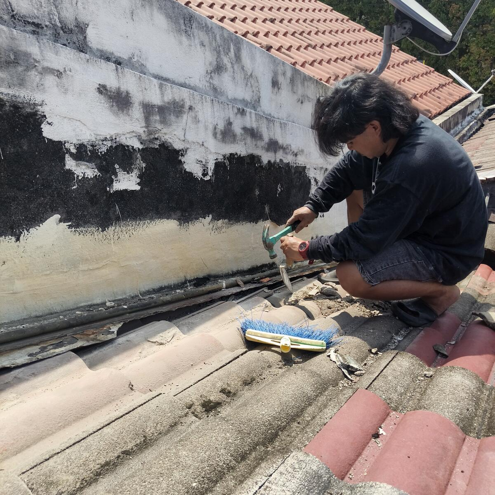
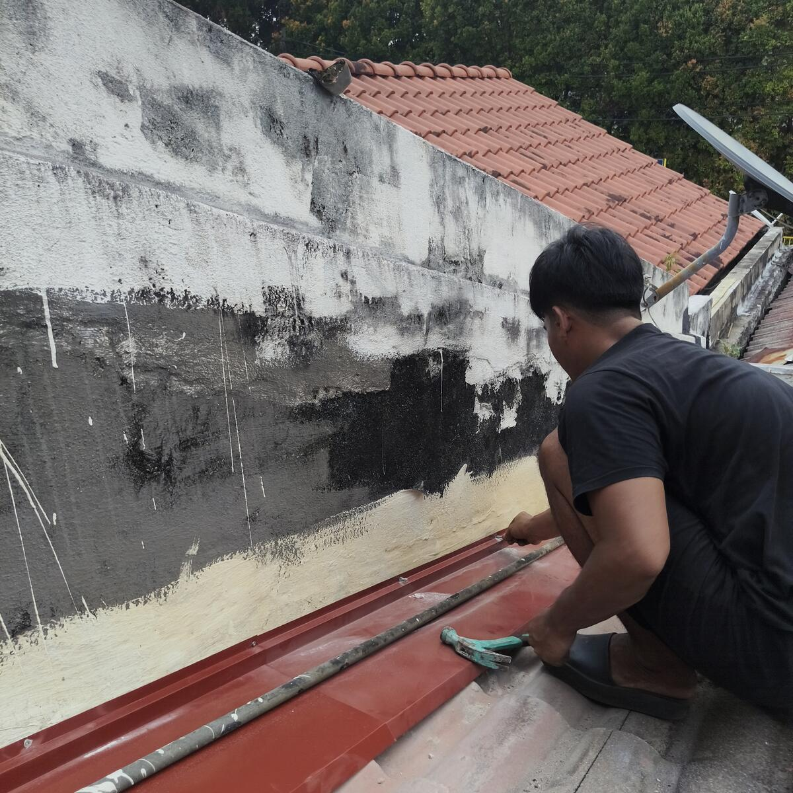
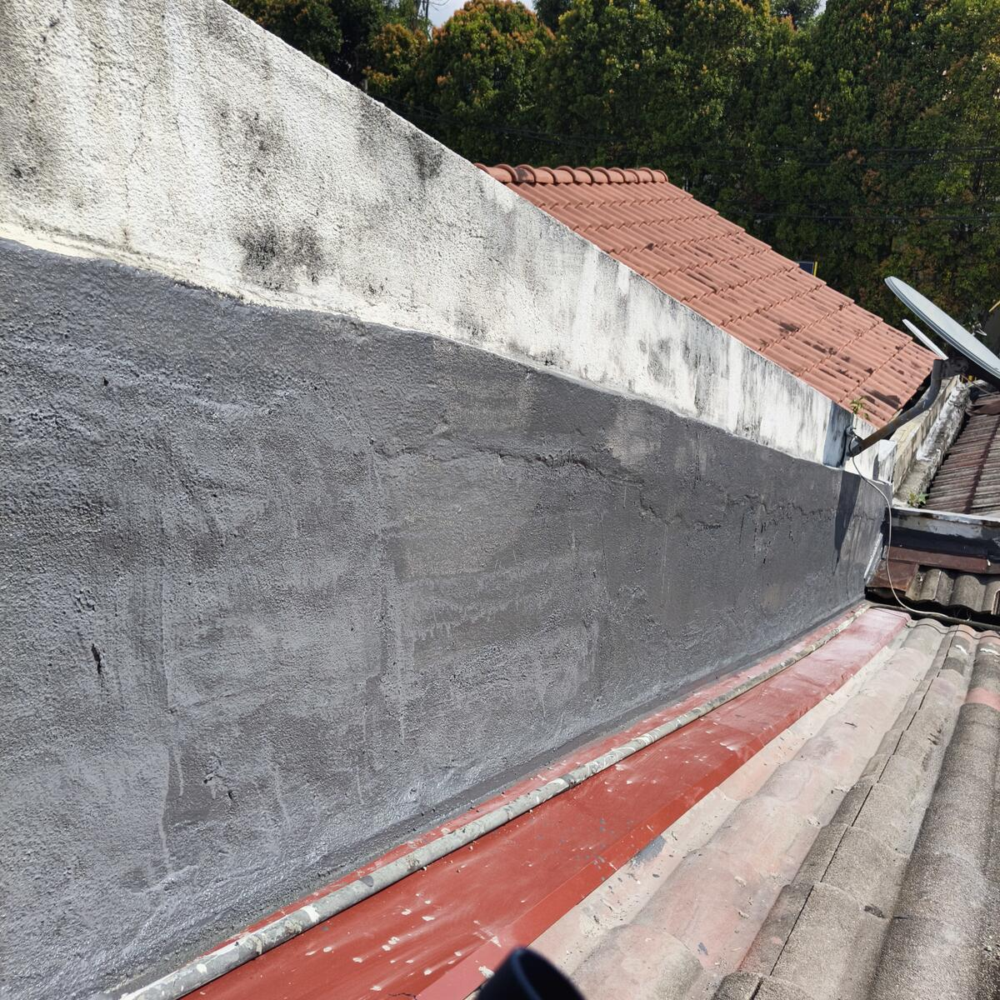

Pembaikan Sambungan Bumbung dan Dinding di Sri Petaling



Kami membuka bahagian sambungan lama dan memasang flashing logam baharu di sepanjang pertemuan genting dengan dinding. Video menunjukkan keadaan sambungan sebelum flashing baharu dipasang.